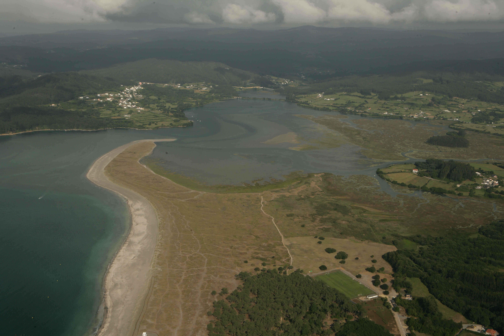

Ortigueira
Atrás
Sendero Azul Borde Litoral de la Ría de Ortigueira
Ría de Ortigueira-Ladrido

Estuario de la ría de Ortigueira
Laguna de San Martiño
Playa Bandera Azul de Morouzos
Playa Bandera Azul A Concha
Centro Azul Fundación Ortegalia
Puerto Deportivo Bandera Azul de Ortigueira
Portada
Mapa
Ortigueira
Atrás
Sendero Azul Borde Litoral de la Ría de Ortigueira
Ría de Ortigueira-Ladrido
Esteiro da ría de Ortigueira
Lagoa de San Martiño
Praia Bandera Azul de Morouzos
Praia Bandera Azul A Concha
Centro Azul Fundación Ortegalia
Puerto Deportivo Bandera Azul de Ortigueira
Portada
Mapa